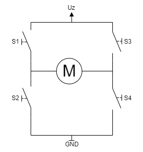
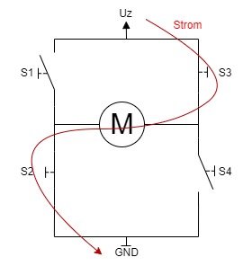
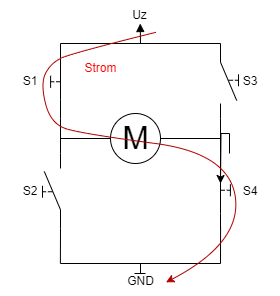
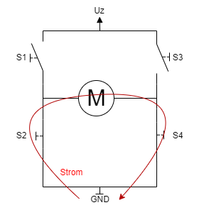
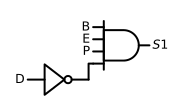
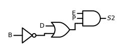
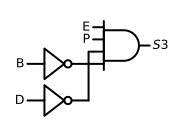
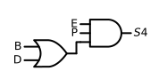

| PWM | Enable | Direction | Break | S1 | S2 | S3 | S4 |
|---|---|---|---|---|---|---|---|
| 0 | 0 | 0 | 0 | 0 | 0 | 0 | 0 |
| 0 | 0 | 0 | 1 | 0 | 0 | 0 | 0 |
| 0 | 0 | 1 | 0 | 0 | 0 | 0 | 0 |
| 0 | 0 | 1 | 1 | 0 | 0 | 0 | 0 |
| 0 | 1 | 0 | 0 | 0 | 0 | 0 | 0 |
| 0 | 1 | 0 | 1 | 0 | 0 | 0 | 0 |
| 0 | 1 | 1 | 0 | 0 | 0 | 0 | 0 |
| 0 | 1 | 1 | 1 | 0 | 0 | 0 | 0 |
| 1 | 0 | 0 | 0 | 0 | 0 | 0 | 0 |
| 1 | 0 | 0 | 1 | 0 | 0 | 0 | 0 |
| 1 | 0 | 1 | 0 | 0 | 0 | 0 | 0 |
| 1 | 0 | 1 | 1 | 0 | 0 | 0 | 0 |
| 1 | 1 | 0 | 0 | 0 | 1 | 1 | 0 |
| 1 | 1 | 0 | 1 | 0 | 1 | 0 | 1 |
| 1 | 1 | 1 | 0 | 1 | 0 | 0 | 1 |
| 1 | 1 | 1 | 1 | 0 | 1 | 0 | 1 |
3 H-Brücke
Der Markt für DC-Motoren belief sich im Jahr 2022 auf ca. 20,1 Milliarden US-Dollar und es wurde erwartet, dass sich das Volumen bis 2031 auf 49,3 Milliarden erhöht [1]. Jeder dieser Motoren braucht eine mehr oder weniger komplizierte Ansteuerung. Eine mögliche Ansteuerung soll hier gezeigt werden.
Ziel
Es soll eine Schaltung entworfen werden welche es erlaubt, einen DC-Motor in folgenden Betriebsarten zu betreiben:
- Linkslauf
- Rechtslauf
- Bremsen
Bei den ersten beiden Punkten soll es Möglich sein, die Drehzahl mittels Puls-Weiten-Modulation (PWM) zu ändern.
Lernziele
- Strukturiertes aufbereiten einer Aufgabenstellung
- Auslegung von digitalen Schaltungen
- Plausibilität und Qualitätsbeurteilung mittels Simulation
- Hierarchisches Design in Schaltplänen
- Strukturiertes, zeitoptimiertes Dokumentieren der Arbeit
3.1 Beschreibung der H-Brücke
Im einfachsten Fall wird die Stromversorgung, welche eine entsprechende Leistung hat, mit einem Schalter eingeschaltet und der Motor dreht sich. Um einen Motor drehzahlgesteuert zu betreiben, bedarf es ein Steuersignal und der entsprechenden Leistung für den Motor. In den meisten Fällen ist es so, dass das Steuersignal selbst nicht ausreichend Leistung hat, da es aus einem Mikrocontroller kommt.
Mit Schaltung Abbildung 1.1 kann ein Motor Drehzahlgesteuert betrieben werden. Der MOSFET verstärkt dabei die Leistung des Steuersignales. Die Leistung wird von der Quelle \(U_q\) zur Verfügung gestellt. Allerdings lässt sich dabei die Drehrichtung nicht ändern.
Um die oben geforderten Betriebszustände zu erreichen, bedarf es der H-Brücke, auch Vier-Quadranten-Steller genannt, in Abbildung 3.1. Die punktiert umrandete Schaltung ist dabei das Ersatzschaltbild eines DC-Motors.
3.1.1 Funktionsweise
Für die Erklärung der Funktionsweise werden die MOSFET’s durch gedachte Schalter ersetzt. Dies ist Zulässig, da der MOSFET als Schalter betrieben werden kann. Siehe dazu Kapitel 1.1.

\(S_1, S_2, S_ 3\) und \(S_4\) stellen dabei Potentiale dar. Zur erinnerung, ein MOSFET schaltet wenn die Spannungs zwischen Gate und Source, \(U_{GS}\), die Threshold-Spannung \(U_{GS,Threshold}\) überschreitet. In Bild Abbildung 3.2 sind alle Schalter offen. Da es sich um N-Kanal Selbstsperrende MOSFET handelt müssen, für diesen Zustand, alle Potentiale, \(S_1\) bis \(S_4\), \(0 \ \mathrm{V}\) sein.
Der Trick ist, den Stromfluss durch den Motor für Rechtslauf und Linkslauf umzukehren. Dies gelingt wie folgt.
3.1.1.1 Linkslauf

Potential \(S_2\) und \(S_3\) müssen auf HIGH sein. Potential \(S_1\) und \(S_4\) müssen auf LOW sein.
3.1.1.2 Rechtslauf

Potential \(S_1\) und \(S_4\) müssen auf HIGH sein. Potential \(S_2\) und \(S_3\) müssen auf LOW sein.
3.1.1.3 Bremsen
Um den Motor zu bremsen muss er Kurzgeschlossen werden. Daraus ergibt sich, dass Potential \(S_2\) und \(S_4\) auf HIGH sind und Potential \(S_1\) und \(S_3\) auf LOW sind.

3.2 Entwicklung der Logik
Zunächst muss in der Zuordnungstabelle der Zusammenhang zwischen dem logischen Zustand und dem physikalischen Wert definiert werden.
| Eingang / Ausgang | Bezeichnung | Zuordnung | Beschreibung |
|---|---|---|---|
| Eingang | E … Enable | 0 … Disabled; 1 … Enabled | Damit wird die Schaltung Betriebsbereit, Ist Enable deaktiviert kann an den anderen Eingängen ein beliebiges Signal anliegen, der Motor darf sich trotzdem nicht bewegen. |
| Eingang | B … Break | 0 … Disabled; 1 … Enabled | Aktivierung des Bremsbetriebs. Hat Vorrang über die Richtungswahl. |
| Eingang | D … Direction | 0 … Linkslauf; 1 … Rechtslauf | Gibt die Drehrichtung vor. |
| Eingang | P … PWM | PWM Signal | Gibt die Drehzahl vor. |
| Ausgänge | S1, S2, S3, S4 | 0 … MOSFET aus; 1 … MOSFET ein | PWM Signal für die Transistoren. |
In der Wahrheitstabelle wird nun der Schaltzustand der Ausgänge in Abhängigkeit der Eingänge definiert.
Mittels KV-Diagram oder Boolescher Algebra kann aus der Wahrheitstabelle die einfachste Boolesche Gleichung Form ermittelt werden. Da die Logik sehr einfach ist kann das Ergebnis auch direkt aus der Wahrheitstabelle abgelesen werden.
\(\displaystyle S_{1} = B \wedge E \wedge P \wedge \neg D\)
\(\displaystyle S_{2} = E \wedge P \wedge \left(D \vee \neg B\right)\)
\(\displaystyle S_{3} = E \wedge P \wedge \neg B \wedge \neg D\)
\(\displaystyle S_{4} = E \wedge P \wedge \left(B \vee D\right)\)
Aus den Gleichungen können nun die Schaltungen gezeichnet werden.



